Machine Learning Avanzado y Aprendizaje Profundo · ML02
ML02 · Gradient Boosting y XGBoost
Teoría revisada · Diagramas ampliables · Práctica ejecutada en CPU
En esta página
2. El Algoritmo de Gradient Boosting (De la Intuición a la Implementación)2.1. Introducción e intuición2.1.1. Analogía del golfista2.1.2. De residuos a gradientes2.2. Los Tres Elementos Fundamentales2.2.1. Aprendiz base2.2.2. Función de pérdida2.2.3. Modelo aditivo2.3. Formulación Matemática Formal2.3.1. Inicialización2.3.2. Bucle secuencial2.4. Regularización: Evitando el Sobreajuste (Overfitting)2.5. Resumen2.6. Pipeline híbrido: PyTorch y XGBoost2.6.1. Instalación de Dependencias y Configuración del Entorno2.6.2. Pipeline de Datos Avanzado con Tensores de PyTorch2.6.3. Extractor de Representaciones Latentes2.6.4. Función Objetivo Personalizada de XGBoost basada en PyTorch Autograd2.6.5. Pipeline Híbrido (Extracción Latente + Entrenamiento con XGBoost)2.6.6. Dashboard de Visualización Avanzada y Explicabilidad2.7. Elegir el modelo con evidenciaReferencias y lecturas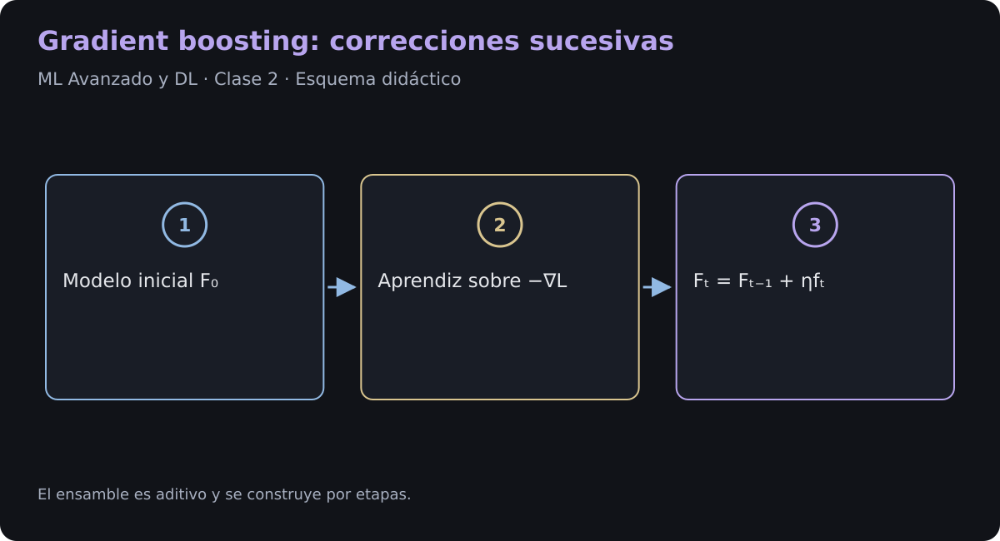
Gradient Boosting construye un modelo aditivo mediante pasos de descenso en el espacio de funciones. Veremos su formulación y un ejemplo de dos etapas: un extractor supervisado en PyTorch seguido de XGBoost.
2.1. Introducción e intuición
Boosting combina modelos base de forma secuencial. En clasificación, la noción teórica de aprendiz débil suele expresarse como rendimiento mejor que el azar bajo ciertas distribuciones. En regresión, esa frase no define por sí sola al aprendiz: aquí usamos árboles de capacidad limitada que aproximan una dirección de mejora de la pérdida.
Cada etapa añade una corrección al ensamble existente. En el esquema habitual por etapas, los modelos anteriores permanecen fijos. Bagging ajusta sus modelos base de forma independiente; Random Forest añade aleatorización de características.
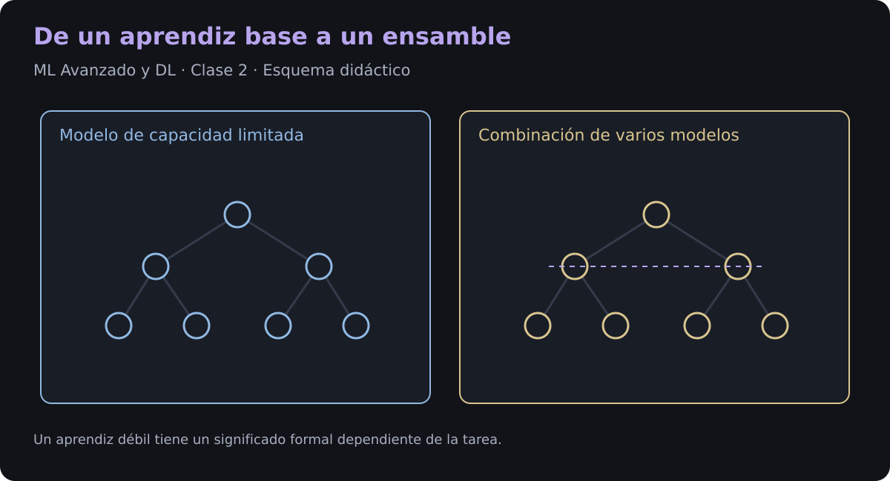
2.1.1. Analogía del golfista
La predicción inicial es la posición de salida. Con pérdida cuadrática, cada árbol aprende una aproximación a la distancia pendiente . La tasa de aprendizaje amortigua cada corrección. Es una analogía: los pasos no garantizan llegar exactamente al objetivo y perseguir el ruido de entrenamiento puede empeorar la predicción fuera de muestra.
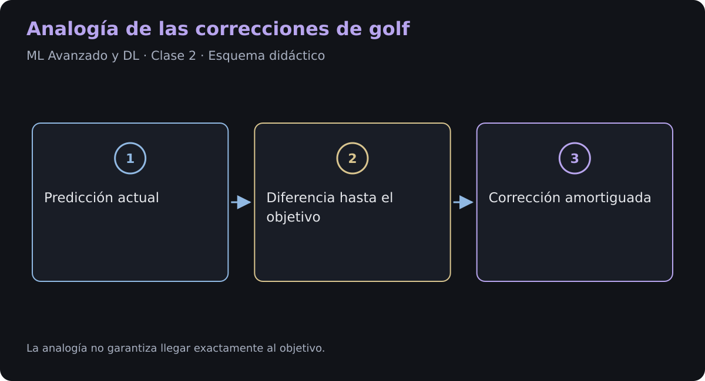
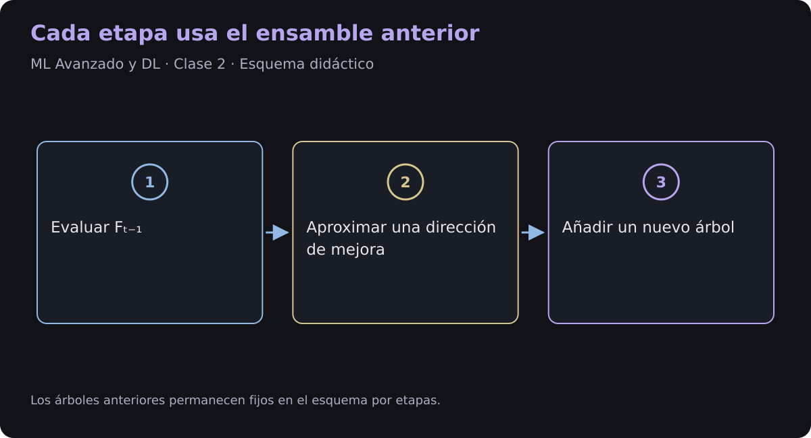
2.1.2. De residuos a gradientes
Con pérdida cuadrática, la corrección se ajusta a residuos ordinarios. Para otras pérdidas, se ajusta al gradiente negativo respecto de la puntuación actual. En clasificación esa puntuación puede ser un logit, no una etiqueta ni una probabilidad directa.
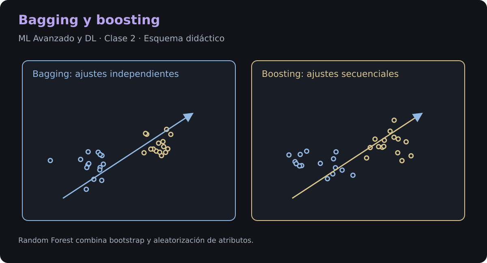
2.2. Los Tres Elementos Fundamentales
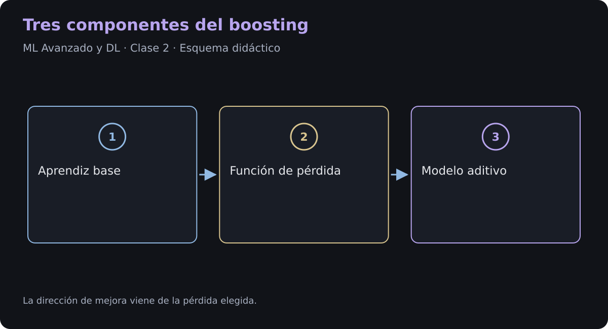
2.2.1. Aprendiz base
Se usan habitualmente árboles de regresión incluso para clasificación, porque sus hojas aportan correcciones numéricas a las puntuaciones. Profundidad, número de hojas y mínimo de muestras por hoja controlan su complejidad. No hay una profundidad universal adecuada.
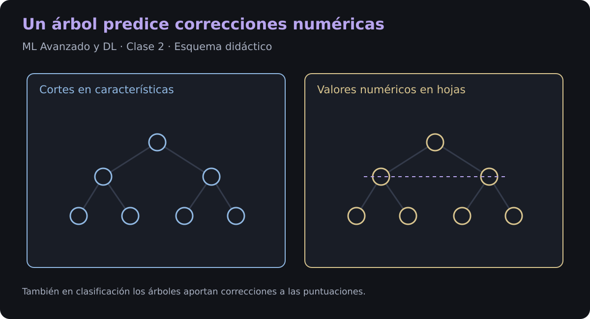
2.2.2. Función de pérdida
El descenso funcional se formula para pérdidas diferenciables respecto de la predicción. Algunas extensiones usan subgradientes o actualizaciones específicas para pérdidas no suaves. El error absoluto no es diferenciable en cero; no debe presentarse como un ejemplo de suavidad global. XGBoost usa gradientes y curvaturas de segundo orden y exige condiciones adicionales para un objetivo personalizado estable.
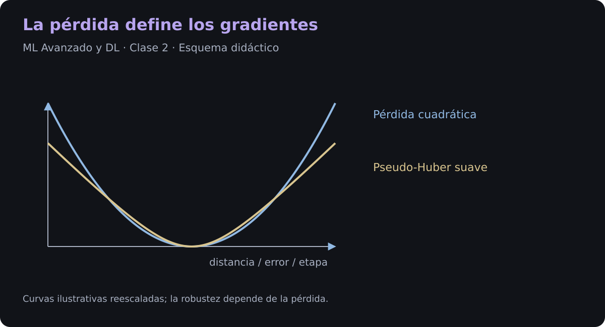
2.2.3. Modelo aditivo
es la predicción inicial, la nueva función base, su tamaño de paso y el shrinkage. En árboles, la optimización del paso puede hacerse por hoja. Si se absorbe en la salida del árbol, se escribe simplemente . Las etapas de boosting son iteraciones, no épocas de una red neuronal.
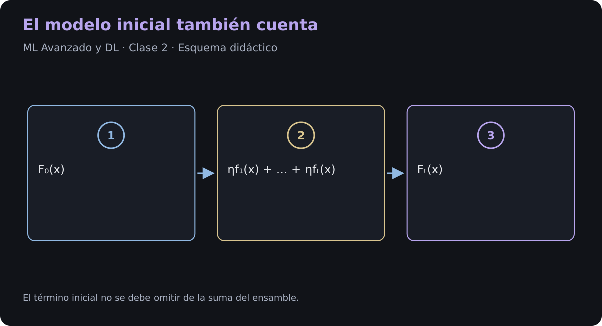
2.3. Formulación Matemática Formal
Definamos formalmente el algoritmo paso a paso utilizando un conjunto de datos de entrenamiento .
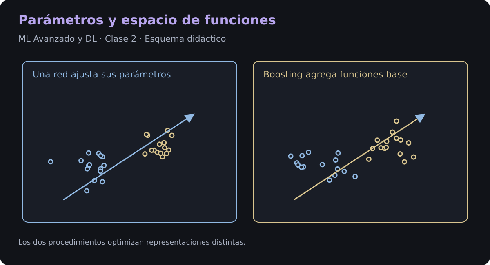
2.3.1. Inicialización
Para , el óptimo es la media de los objetivos de entrenamiento. Otras pérdidas tienen otra inicialización; con pérdida absoluta se utiliza una mediana.
2.3.2. Bucle secuencial
Para cada etapa , calculamos la dirección de mejora usando , ajustamos un aprendiz y actualizamos el ensamble.
1. Gradiente negativo
Los son pseudo-residuos. No deben confundirse con el gradiente positivo que recibe la interfaz de objetivos de XGBoost.
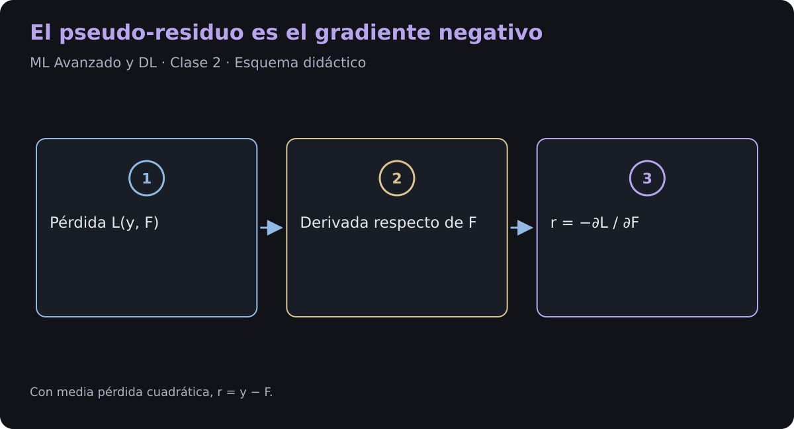
2. Caso cuadrático
Si , entonces y
La igualdad exacta con el residuo depende del factor . Para una pérdida cuadrática con otra escala, el gradiente cambia por ese factor.
3. Ajustar el aprendiz
El árbol aproxima el vector de gradientes negativos en los puntos observados. Una búsqueda de paso o una actualización por hoja adapta luego la corrección a la pérdida original.
4. Actualizar el ensamble
La mejora de la pérdida de entrenamiento depende de la dirección y del paso elegidos. No garantiza una reducción de todos los residuos ni de la pérdida de validación en cada etapa.
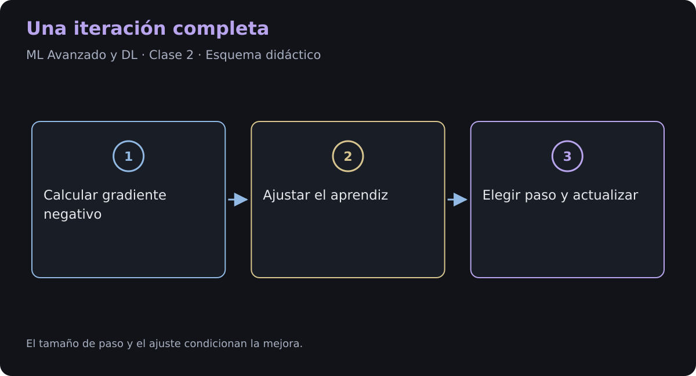
2.4. Regularización: Evitando el Sobreajuste (Overfitting)
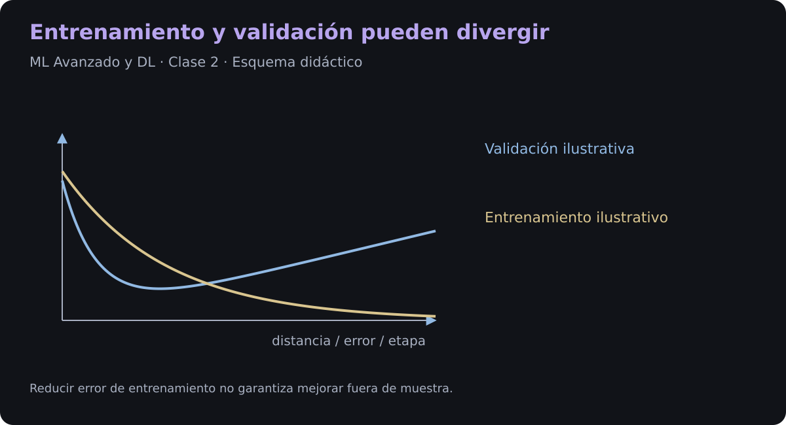
Debido a su inmenso poder de adaptación secuencial, Gradient Boosting puede sobreajustar los datos de entrenamiento con facilidad si no se aplican técnicas de regularización. Las estrategias estándar de la industria son:
1. Shrinkage
Una tasa pequeña reduce la contribución de cada árbol y suele requerir más etapas. Puede mejorar la generalización, pero hay que seleccionar conjuntamente learning_rate y número de árboles usando validación.
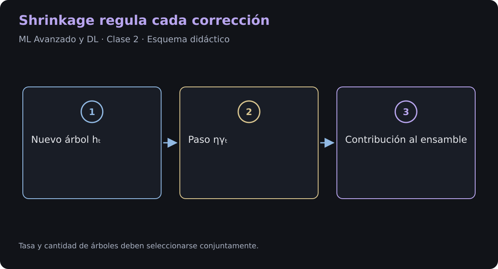
2. Submuestreo
El boosting estocástico ajusta cada etapa con una fracción aleatoria de las filas, normalmente sin reemplazo en su formulación clásica. Algunas bibliotecas ofrecen otros esquemas de muestreo. También pueden muestrearse columnas. Son mecanismos de regularización; su beneficio y fracción adecuada dependen del problema.
3. Parada temprana
Se monitoriza una métrica sobre un conjunto de validación que no se usa para ajustar directamente los árboles. Una paciencia limita las iteraciones sin mejora. El conjunto de test se reserva para la evaluación final y no se utiliza para decidir hiperparámetros, épocas ni parada temprana.
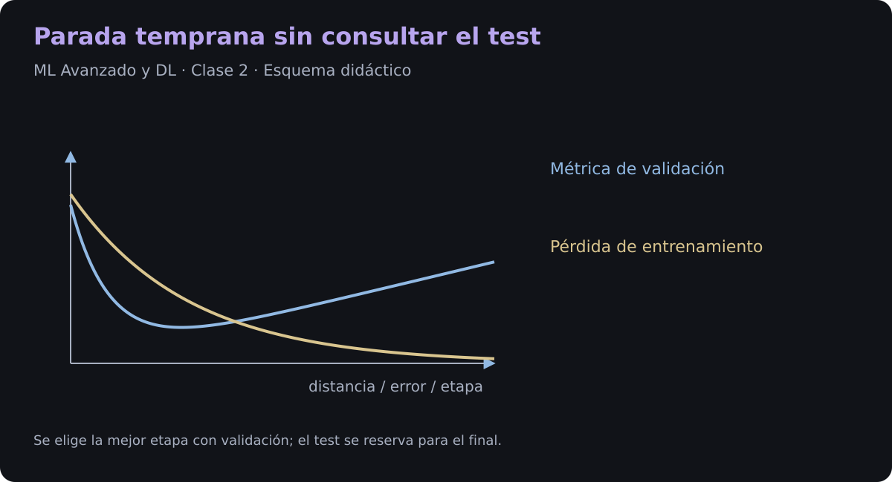
2.5. Resumen
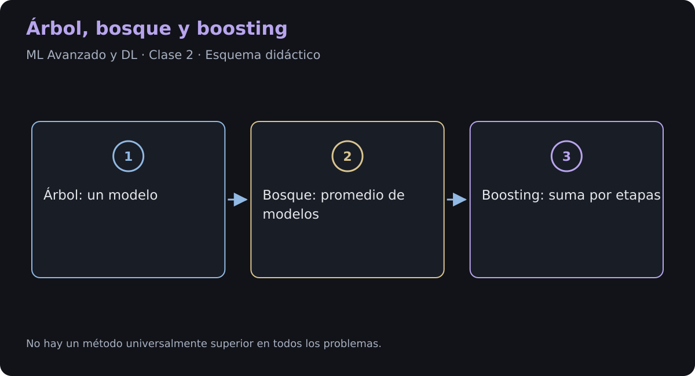
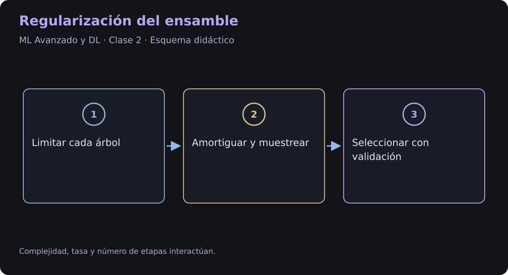
2.6. Pipeline híbrido: PyTorch y XGBoost
Son dos entrenamientos sucesivos. El extractor se aprende con retropropagación; XGBoost se ajusta después con sus propias reglas. No se propaga el gradiente de los árboles a la red.
2.6.1. Instalación de Dependencias y Configuración del Entorno
Instalamos PyTorch, XGBoost y las bibliotecas de análisis. Fijar semillas ayuda a repetir el experimento dentro del mismo entorno; no garantiza resultados idénticos entre versiones, dispositivos o todos los algoritmos CUDA. El ejemplo se ejecuta en CPU y usa un objetivo pseudo-Huber suave.
Instalación en notebook
!pip install -q xgboost seaborn plotly shap graphviz
Código Python
# ==============================================================================
# CELDA 1: Instalación de dependencias y configuración del entorno
# ==============================================================================
import os
import torch
import torch.nn as nn
import torch.optim as optim
from torch.utils.data import Dataset, DataLoader
import xgboost as xgb
import numpy as np
import pandas as pd
import matplotlib.pyplot as plt
import seaborn as sns
import plotly.graph_objects as go
import plotly.express as px
import shap
# Configuración de rendimiento y semillas de reproducibilidad
device = torch.device("cuda" if torch.cuda.is_available() else "cpu")
torch.manual_seed(42)
np.random.seed(42)
print(f"[INFO] Entorno configurado correctamente. Dispositivo activo en PyTorch: {device}")
[INFO] Entorno configurado correctamente. Dispositivo activo en PyTorch: cpu
2.6.2. Pipeline de Datos Avanzado con Tensores de PyTorch
El Dataset genera 3.000 observaciones con 12 atributos y objetivo
Separaremos 60% para entrenamiento, 20% para validación y 20% para test con índices reproducibles. Los DataLoader mezclan únicamente entrenamiento. Se mantienen los mismos índices al extraer representaciones, para alinear características y objetivos.
Código Python
# ==============================================================================
# CELDA 2: Definición del Dataset y Generación de Datos en PyTorch
# ==============================================================================
class SyntheticTabularDataset(Dataset):
"""
Dataset sintético personalizado implementado en PyTorch para datos tabulares.
Atributos:
features_tensor (torch.Tensor): Tensor multidimensional con las variables explicativas.
target_tensor (torch.Tensor): Tensor continuo con la variable objetivo.
"""
def __init__(self, num_samples: int = 2000, num_features: int = 10):
"""
Inicializa la generación de datos no lineales sintéticos.
Args:
num_samples (int): Número total de instancias a generar.
num_features (int): Cantidad de atributos/características por muestra.
"""
raw_features = torch.randn(num_samples, num_features, dtype=torch.float32)
# Relación compleja no lineal entre variables
raw_target = (
torch.sin(raw_features[:, 0]) * 2.0 +
torch.pow(raw_features[:, 1], 2) * 1.5 -
raw_features[:, 2] * raw_features[:, 3] +
torch.randn(num_samples) * 0.2
)
self.features_tensor = raw_features
self.target_tensor = raw_target.unsqueeze(1)
def __len__(self) -> int:
"""Devuelve la longitud total del dataset."""
return len(self.features_tensor)
def __getitem__(self, index: int):
"""
Obtiene una muestra individual mediante su índice.
Args:
index (int): Posición del elemento a recuperar.
Returns:
tuple: (features, target) como tensores individuales.
"""
return self.features_tensor[index], self.target_tensor[index]
# Instanciación y división de entrenamiento, validación y test
dataset = SyntheticTabularDataset(num_samples=3000, num_features=12)
train_size = int(0.6 * len(dataset))
validation_size = int(0.2 * len(dataset))
test_size = len(dataset) - train_size - validation_size
train_dataset, validation_dataset, test_dataset = torch.utils.data.random_split(
dataset, [train_size, validation_size, test_size],
generator=torch.Generator().manual_seed(42)
)
train_loader = DataLoader(train_dataset, batch_size=64, shuffle=True)
validation_loader = DataLoader(validation_dataset, batch_size=128, shuffle=False)
test_loader = DataLoader(test_dataset, batch_size=128, shuffle=False)
print(f"Particiones: entrenamiento={train_size}, validación={validation_size}, test={test_size}")
Particiones: entrenamiento=1800, validación=600, test=600
2.6.3. Extractor de Representaciones Latentes
El encoder transforma 12 atributos en 6 variables latentes usando capas afines y SiLU. La cabeza lineal auxiliar se entrena con MSE durante 25 épocas. Es un extractor supervisado, no un autoencoder: no existe una pérdida de reconstrucción de la entrada.
BatchNorm usa estadísticas de lote durante entrenamiento y acumuladas durante evaluación; Dropout introduce regularización estocástica. Ninguno garantiza ausencia de sobreajuste ni que la compresión conserve toda la información útil.
Código Python
# ==============================================================================
# CELDA 3: Arquitectura Deep Learning en PyTorch para Extracción de Representaciones
# ==============================================================================
class LatentFeatureExtractor(nn.Module):
"""
Extractor supervisado para proyectar atributos tabulares
a un espacio latente no lineal de menor dimensión.
"""
def __init__(self, input_dim: int, latent_dim: int = 6):
"""
Define la estructura modular de la red neuronal.
Args:
input_dim (int): Dimensión de entrada del espacio de atributos.
latent_dim (int): Dimensión proyectada del espacio latente.
"""
super(LatentFeatureExtractor, self).__init__()
self.encoder = nn.Sequential(
nn.Linear(input_dim, 64),
nn.SiLU(),
nn.BatchNorm1d(64),
nn.Dropout(0.1),
nn.Linear(64, 32),
nn.SiLU(),
nn.Linear(32, latent_dim)
)
self.regressor_head = nn.Linear(latent_dim, 1)
def extract_features(self, input_features: torch.Tensor) -> torch.Tensor:
"""
Extrae únicamente las representaciones latentes del cuello de botella.
Args:
input_features (torch.Tensor): Tensores de entrada.
Returns:
torch.Tensor: Espacio latente de baja dimensión.
"""
return self.encoder(input_features)
def forward(self, input_features: torch.Tensor) -> torch.Tensor:
"""
Paso hacia adelante completo (Forward Pass).
Args:
input_features (torch.Tensor): Tensores de entrada.
Returns:
torch.Tensor: Predicción estimada de la red.
"""
latent_space = self.extract_features(input_features)
predictions = self.regressor_head(latent_space)
return predictions
# Entrenamiento del modelo en PyTorch
pytorch_model = LatentFeatureExtractor(input_dim=12, latent_dim=6).to(device)
criterion = nn.MSELoss()
optimizer = optim.AdamW(pytorch_model.parameters(), lr=0.005, weight_decay=1e-4)
pytorch_history = []
pytorch_model.train()
for epoch in range(25):
epoch_loss = 0.0
for features_batch, target_batch in train_loader:
features_batch = features_batch.to(device)
target_batch = target_batch.to(device)
optimizer.zero_grad()
predictions_batch = pytorch_model(features_batch)
loss = criterion(predictions_batch, target_batch)
loss.backward()
optimizer.step()
epoch_loss += loss.item() * features_batch.size(0)
total_epoch_loss = epoch_loss / len(train_loader.dataset)
pytorch_history.append(total_epoch_loss)
print(f"[INFO] Entrenamiento PyTorch finalizado. Pérdida final (MSE): {pytorch_history[-1]:.4f}")
[INFO] Entrenamiento PyTorch finalizado. Pérdida final (MSE): 0.4495
2.6.4. Función Objetivo Personalizada de XGBoost basada en PyTorch Autograd
XGBoost necesita gradientes y Hessianos de una pérdida aditiva por observación. Para evitar la curvatura nula de Huber fuera de su zona cuadrática y su falta de segunda derivada en el umbral, usamos pseudo-Huber, con :
Es suave y convexa; su gradiente está acotado y su curvatura es positiva para residuos finitos. Reduce la influencia de residuos grandes, sin ser insensible a ellos. Autograd calculará estas derivadas y las contrastaremos con las expresiones analíticas.
El callback recibe las predicciones de XGBoost y las etiquetas de DMatrix. Construimos un tensor con requires_grad=True, sumamos las pérdidas por muestra y derivamos con create_graph=True. Una segunda derivación de la suma de gradientes recupera la diagonal del Hessiano porque esta pérdida es separable por observación. Esto no proporciona la diagonal de un Hessiano arbitrario con acoplamientos entre muestras.
Los arreglos devueltos contienen el gradiente positivo y la curvatura, no el gradiente negativo. Aplicamos un piso numérico muy pequeño a la curvatura. La diferenciación se realiza en CPU y agrega un costo frente a un objetivo nativo.
El extractor aprende una representación con la pérdida supervisada auxiliar; los árboles aprenden sobre esa representación. La utilidad del enfoque híbrido debe compararse con XGBoost sobre las variables originales y con la red sola, usando las mismas particiones. No existe una superioridad garantizada.
Código Python
# Objetivo pseudo-Huber: pérdida suave, aditiva y convexa por observación.
def pytorch_pseudohuber_objective(predictions: np.ndarray, dtrain: xgb.DMatrix):
predictions_tensor = torch.tensor(predictions, dtype=torch.float64, requires_grad=True)
labels_tensor = torch.tensor(dtrain.get_label(), dtype=torch.float64)
delta = 1.0
residual = predictions_tensor - labels_tensor
loss = (delta**2 * (torch.sqrt(1 + (residual / delta)**2) - 1)).sum()
gradient = torch.autograd.grad(loss, predictions_tensor, create_graph=True)[0]
# La pérdida es separable: esta segunda derivada devuelve la diagonal.
hessian = torch.autograd.grad(gradient.sum(), predictions_tensor)[0]
return gradient.detach().numpy(), hessian.detach().numpy().clip(min=1e-8)
2.6.5. Pipeline Híbrido (Extracción Latente + Entrenamiento con XGBoost)
Con eval() fijamos el comportamiento de Dropout y BatchNorm. Con torch.no_grad() evitamos registrar operaciones para retropropagación. Extraemos matrices latentes de entrenamiento, validación y test y construimos sus DMatrix.
XGBoost dispone de un máximo de 100 iteraciones; early_stopping_rounds usa únicamente validación. Para evaluar o explicar el modelo final se restringe la predicción a best_iteration + 1, porque la API nativa puede conservar árboles posteriores a la mejor iteración.
Código Python
# Extracción con filas alineadas y red en modo evaluación.
pytorch_model.eval()
def latent_matrix(subset):
features = subset.dataset.features_tensor[subset.indices].to(device)
targets = subset.dataset.target_tensor[subset.indices].squeeze(-1).numpy()
with torch.no_grad():
embeddings = pytorch_model.extract_features(features).cpu().numpy()
return embeddings, targets
train_latent_space, all_train_targets = latent_matrix(train_dataset)
validation_latent_space, all_validation_targets = latent_matrix(validation_dataset)
test_latent_space, all_test_targets = latent_matrix(test_dataset)
dtrain_matrix = xgb.DMatrix(train_latent_space, label=all_train_targets)
dvalidation_matrix = xgb.DMatrix(validation_latent_space, label=all_validation_targets)
dtest_matrix = xgb.DMatrix(test_latent_space, label=all_test_targets)
xgboost_parameters = {
'tree_method': 'hist', 'max_depth': 5, 'learning_rate': 0.05,
'eval_metric': 'rmse', 'seed': 42, 'nthread': 2
}
evaluation_results = {}
xgboost_booster = xgb.train(
params=xgboost_parameters, dtrain=dtrain_matrix, num_boost_round=100,
obj=pytorch_pseudohuber_objective,
evals=[(dtrain_matrix, 'train'), (dvalidation_matrix, 'validation')],
early_stopping_rounds=15, evals_result=evaluation_results, verbose_eval=False
)
best_booster = xgboost_booster[:xgboost_booster.best_iteration + 1]
xgboost_predictions = best_booster.predict(dtest_matrix)
test_rmse = np.sqrt(np.mean((xgboost_predictions - all_test_targets)**2))
print(f"Mejor iteración: {xgboost_booster.best_iteration}; RMSE final de test: {test_rmse:.4f}")
Mejor iteración: 99; RMSE final de test: 0.4063
2.6.6. Dashboard de Visualización Avanzada y Explicabilidad
Las visualizaciones muestran la pérdida del extractor, las distribuciones de las variables latentes, atribuciones SHAP y valores reales frente a predichos. SHAP descompone la salida del modelo respecto de una referencia; no identifica efectos causales. Las atribuciones de una variable latente tampoco equivalen directamente a importancias de las características originales. El test se consulta al final y se informa RMSE.
Código Python
# ==============================================================================
# CELDA 6: Visualizaciones Interactivas y Diagnóstico Avanzado del Modelo
# ==============================================================================
# --- Visualización 1: Curva de Pérdida en PyTorch con Plotly ---
fig_loss = go.Figure()
fig_loss.add_trace(go.Scatter(
y=pytorch_history,
mode='lines+markers',
name='PyTorch MSE Loss',
line=dict(color='#636EFA', width=3)
))
fig_loss.update_layout(
title='<b>Evolución del Entrenamiento en PyTorch (Feature Extractor)</b>',
xaxis_title='Época',
yaxis_title='MSE Loss',
template='plotly_white',
width=850,
height=400
)
fig_loss.show()
# --- Visualización 2: Distribución de Representaciones Latentes con Seaborn ---
latent_dataframe = pd.DataFrame(
train_latent_space,
columns=[f'Latent_Dim_{i+1}' for i in range(train_latent_space.shape[1])]
)
plt.figure(figsize=(10, 5))
sns.set_theme(style="whitegrid")
sns.boxplot(data=latent_dataframe, palette="Set2")
plt.title("Distribución de Atributos Extraídos en el Espacio Latente de PyTorch", fontsize=14, fontweight='bold')
plt.ylabel("Valores de Activación")
plt.tight_layout()
plt.show()
# --- Visualización 3: Explicabilidad Global e Importancia con SHAP ---
explainer = shap.TreeExplainer(best_booster)
shap_values = explainer(test_latent_space)
plt.figure(figsize=(9, 4))
shap.summary_plot(shap_values, test_latent_space, feature_names=latent_dataframe.columns, plot_type="bar", show=False)
plt.tight_layout()
plt.show()
# --- Visualización 4: Comparativa de Predicciones Real vs Predicho con Plotly ---
xgboost_predictions = best_booster.predict(dtest_matrix)
fig_pred = px.scatter(
x=all_test_targets,
y=xgboost_predictions,
labels={'x': 'Valores Reales (Ground Truth)', 'y': 'Predicción Híbrida PyTorch+XGBoost'},
title='<b>Desempeño de Predicción: Real vs Modelo Híbrido</b>',
color_continuous_scale='Viridis',
color=np.abs(all_test_targets - xgboost_predictions)
)
fig_pred.add_shape(type="line", x0=all_test_targets.min(), y0=all_test_targets.min(),
x1=all_test_targets.max(), y1=all_test_targets.max(),
line=dict(color="Red", width=2, dash="dash"))
fig_pred.update_layout(template='plotly_dark', width=850, height=450)
fig_pred.show()
clase-2-celda-68:42: FutureWarning: The NumPy global RNG was seeded by calling `np.random.seed`. In a future version this function will no longer use the global RNG. Pass `rng` explicitly to opt-in to the new behaviour and silence this warning.
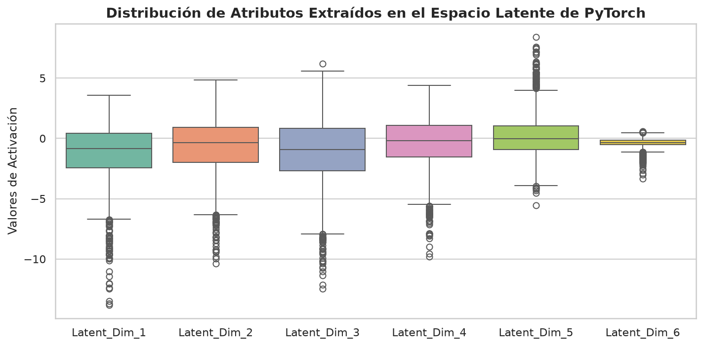
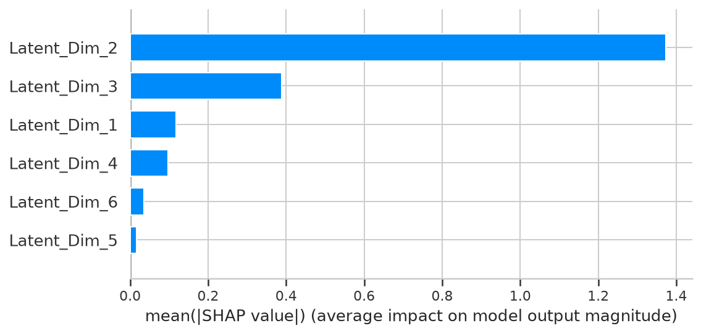
2.7. Elegir el modelo con evidencia
| Situación | Punto de partida |
|---|---|
| Tabla con atributos heterogéneos | Comparar boosting con un baseline sencillo. Los árboles suelen necesitar menos escalado que una red. |
| Texto, imágenes o audio | Evaluar una arquitectura capaz de aprender representaciones adecuadas y, cuando corresponda, un modelo preentrenado. |
| Tabla más embeddings de otras modalidades | Comparar un modelo híbrido con sus componentes por separado. |
| Pérdida de negocio personalizada | Verificar primero las restricciones del optimizador; no toda pérdida es válida para un método de segundo orden. |
XGBoost admite valores faltantes y varias estrategias para categorías. Los árboles basados en orden suelen ser invariantes a transformaciones estrictamente crecientes en aritmética exacta, pero cuantización y precisión numérica pueden introducir diferencias. El costo y el rendimiento dependen de datos, hardware e hiperparámetros.
Referencias y lecturas
Referencias del material de origen: tesis de grado y Dive into Deep Learning. Los textos y figuras de terceros conservan sus créditos y condiciones.